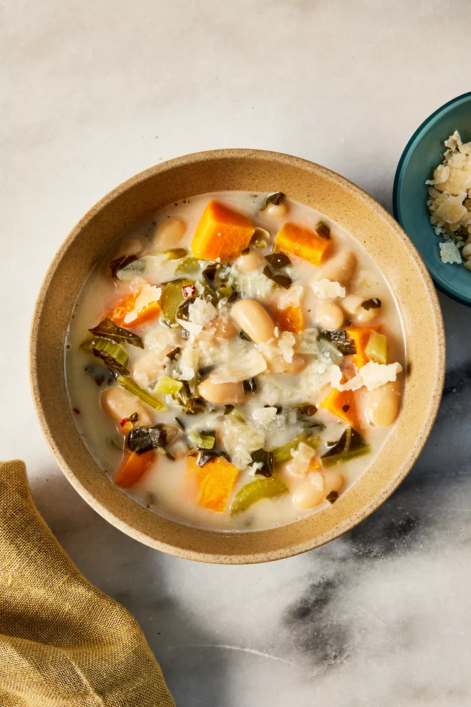

White Bean Soup


 1 ONION & 2 CARROTS
1 ONION & 2 CARROTS
 1/4 CUP OLIVE OIL
1/4 CUP OLIVE OIL
 4 cups reduced-sodium vegetable broth
4 cups reduced-sodium vegetable broth
 2 cups frozen chopped collard greens, thawed
2 cups frozen chopped collard greens, thawed
 1/2 tbs SALT & PEPPER
1/2 tbs SALT & PEPPER
 6 CLOVES GARLIC
6 CLOVES GARLIC
Serving Size: 8
Servings Per Recipe: 8
Serving Size: 1/2 cup
Calories: 120
| Nutrient | Amount | % Daily Value * | Total Carbohydrate | 41g | 15% |
|---|---|---|
| Dietary Fiber | 10g | 37% |
| Total Sugars | 5g | 0% |
| Protein | 13g | 26% |
| Total Fat | 6g | 7% |
| Saturated Fat | 3g | 15% |
| Vitamin A | 864 mug | 3% |
| Vitamin C | 18mg | 20% |
| Vitamin E | 2mg | 13% |
| Folate | 128mcg | 32% |
| Sodium | 412mg | 18% |
| Calcium | 253mg | 19% |
| Iron | 5mg | 25% |
| Magnesium | 92mg | 22% |
| Potassium | 902mg | 19% |
| Vitamin B12 | O mug | 19% |